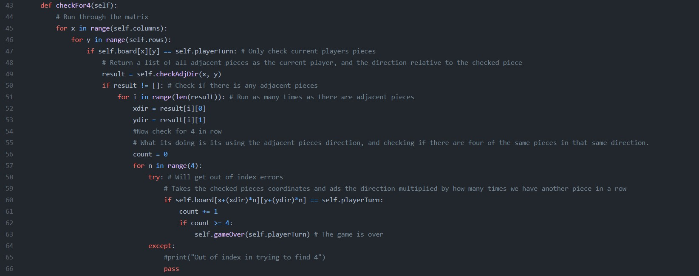
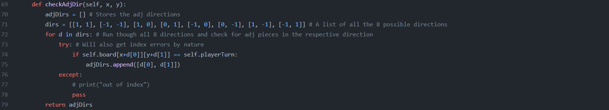

This is a small project I started working on, just after adding the portfolio page. As I was making the portfolio preview I realised, I needed some new projects to display. And after taking a course in back-end programming in Python I decided to test my new knowlegde, for the code language, to engrave it into me. I did NOT want to get help with making the game logic. So I didn't look at others projects or videos to help myself. I wanted to challenge myself, so I could get a better understanding of what I was working with.
I had a rough idea of how I wanted to make the game logic. Beforehand have I used matrices to check for a coordinate/tile and its adjacent tiles. This knowlegde would be my foundation. I knew my biggest problem would be to see if I was able to spot four connected pieces. I thought the rest of the logic would be pretty simple, which it was.
As I was making in it python and wouldn't use any libraries like pygame or other to make visuals, it would only be displayed as strings in the terminal. Though i use numpy to help me display the matrix more easely. It looks like this:

This is the example output of a newly started game of connect four
I'll only show the most interesting part of the code here. If you are intrested in seeing the whole project, you can find in on my GitHub on the top of the page or here.
 What the code above does, is that it runs through all the values in the matrix. A values that matches that of the current player it runs a loop. The loop checks all the adjacent values of the chosen value. If the adjacent value is the same as the chosen value, it saves the relative direction of the adjacent value to the chosen one, as in a coordinate system. An example would be (-1, 1), which is to be understood as, 1 up, 1 to the right or -1 down, 1 to the right. This is because that oregon is in the upper left corner of the matrix.
These directions are then stored in an array, and when all 8 directions are checked for similar values the array is returned.
If there were any directions stored, for the chosen value. Another loops takes these direction, and for each direction up to 4 values will be checked if they are similar to the chosen. First the value with the relative direction of (xdir * 1, ydir * 1) next (xdir * 2, ydir * 2) and so on. This can be formulate as such: (xdir * n, ydir * n). This allows us to check up to 4 values, in this case. If all the values at the relative indeces exist and have the same value as the chosen. The game will end, since in means four pieces are in a line. However if the value at n->2 is not the same, the loops ends, and continues on, through the other directions. If none of the directions results in a win, it will traverse thorugh the rest of the values in the matrix to do the same